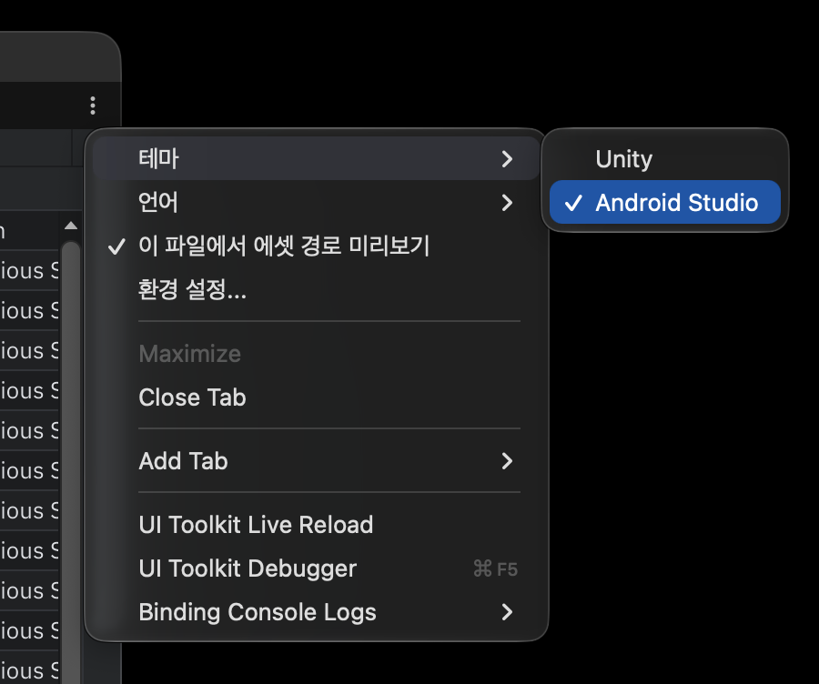

Editor interface

From top to bottom, a Tabular Editor window has the toolbar, the find and replace bar, the external change notice bar, the table and the status bar.
Toolbar and window menu
The toolbar has a search icon button. Click it or press Ctrl+F to open the find and replace bar. Save with Ctrl+S or from the save prompt when closing the window (the 1.0.0 Save and Reload buttons are gone).
The ⋮ menu at the top right of the window contains:

| Item | Action |
|---|---|
| Theme | Choose Unity or Android Studio. Dark/light follows the Unity Editor skin. |
| Language | Choose English or 한국어. Applies to the whole window immediately. |
| Asset Path Preview for This File | Turn asset path display on or off for this file only. |
| Preferences... | Open Preferences > Tabular Editor. |
Table
- Column titles are always A, B, C… Click a title to select the column; drag across titles to select several.
- Hover a column title and click the ▼ button to open the sort menu.
- Drag the right edge of a column title to resize; double-click it to fit the content. Columns with values also fit their content when a file opens.
- Click a row number to select the row; drag to select several. Set header rows from the row number context menu.
- The selection has a blue outline; the round dot at its bottom-right is the fill handle.
- The + buttons at the right and bottom edges add a column and a row at the end.
- Clicking the empty space right of the last column or below the last row selects the nearest cell.
- The mouse wheel scrolls vertically; Shift+wheel and horizontal trackpad swipes scroll horizontally. Ctrl+wheel (Cmd+wheel on macOS) changes the font size.
Find and replace bar
See Find and replace.
External change notice bar
When another program changes the open file, Tabular Editor reloads it right away. Only when you have unsaved edits does a notice bar appear above the table: choose Reload (discard your edits and read the file) or Ignore (keep your edits; you are asked again whether to overwrite when you save).

Status bar
| Position | Shows |
|---|---|
| Left | Table size (120 rows × 8 columns) |
Active cell address and details (C12 (4 chars), 54 cells for a range, 3 rows · Delete to remove for whole rows or columns) |
|
3 missing asset paths when an asset path column has problems — click to go to the next one |
|
| Right | Unsaved |
| Encoding, line ending (LF/CRLF), delimiter and quoting rule — click to open the file format dialog |
The active cell address (C12) can be typed straight into Ctrl+G go to.